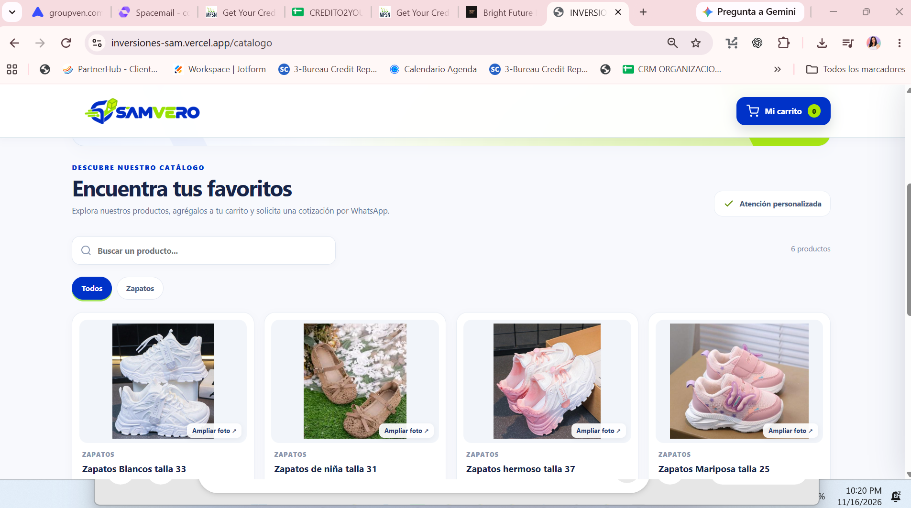

01 / BRANDING · DESARROLLO WEB · GESTIÓN
Inversiones SAMVERO
Identidad que también trabaja.
Creación de identidad visual, sistema de gestión y catálogo digital. Una plataforma para organizar pedidos, ventas, clientes e inventario, con un catálogo público y solicitudes de cotización por WhatsApp.
Visitar proyecto ↗